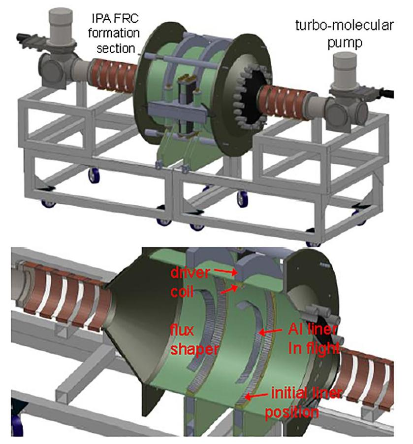
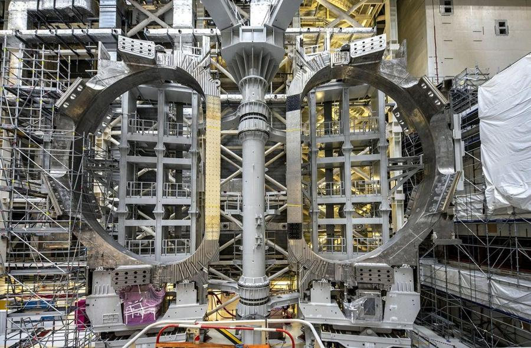
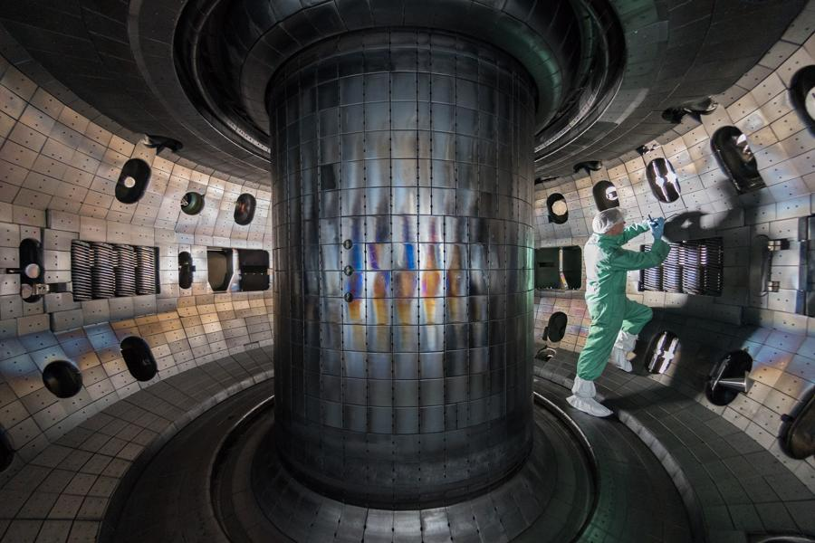

A 5 kg box rides in an elevator moving down and slowing at 5 m/s². What normal force does it feel? (g = 10 m/s²)
75 N. Moving down while slowing means the acceleration points up: N − mg = ma, so N = 5(10 + 5) = 75 N.
A 15 kg crate sits on a truck bed (μₛ = 0.7). The truck accelerates at 7 m/s². Does the crate slide off?
Yes. Maximum static friction is 0.7 × 15 × 9.8 = 102.9 N, but the crate needs 15 × 7 = 105 N to keep up.
Day 4
Circular motion and gravitation
Centripetal force, banked turns and orbits.
Centripetal acceleration
a = v²/r, always toward the center
Velocity and acceleration are perpendicular
Centripetal force
F = mv²/r
Not a new force: it is the net force toward the center
Never drawn on a free-body diagram
Gravitation
Universal law of gravitation
Orbits and orbital speed derivation
A 1200 kg car turns with radius 50 m on a road with μₛ = 0.6. What is the maximum speed without slipping?
17.15 m/s. Friction supplies the centripetal force, so v = √(μgr). On a slick road with μ = 0.4 at that speed, the minimum safe radius is 75 m.
A 2 kg block circles on a table at radius 0.8 m, held by a string to a 0.5 kg block hanging below. Find the tension, speed and period.
Tension 4.9 N (it holds up the hanging block). Speed 1.4 m/s. Period 3.59 s. If the string is cut, the table block flies off in a straight tangent line and the hanging block falls freely.
Day 13
Pressure, density, buoyancy
From a block's mass to why ships float.
Density
ρ = m/V
Specific gravity has nothing to do with gravity
Average density is total mass over total volume
Pressure
P = F/A, measured in pascals
Water and air pressure
Absolute = gauge + atmospheric
Buoyancy
Buoyant force equals the weight of displaced water
Floating, sinking and neutral buoyancy
A metal block has a mass of 18 kg and a volume of 0.006 m³. What is its density?
3000 kg/m³.
An ice cube floats in a full glass of water. When it melts completely, what happens to the water level?
Try it before you open the slides. Options: it rises, it falls, it stays the same, or the glass overflows.
Nuclear fusion propulsion
Presented for the CCIR Spacecraft Engineering Course on October 10, 2024. The question: fusion releases enormous energy, so why can't we fly on it yet, and what would have to change?
How fusion compares with other engines
Fusion's specific impulse dwarfs every other option, but its temperature and unknown cost keep it on the research frontier.
Average values
Specific impulse (s)
Thrust control
Heat (°F)
Weight vs. large rocket
Cost (large rocket)
Liquid chemical
450
Excellent
4,000–5,000
High (90–95%)
$10 million
Solid chemical
250
Limited
~5,000
High (80–90%)
$5 million
Electric
10,000
Excellent
8,500
Low (5–10%)
$40 million
Fission
1,500
Good
3,140
Low (10–20%)
$5 billion
Fusion
130,000
Limited
200,000,000
Low (20–30%)
Unknown
Source: NASA and other online science databases.
Fission
A large, heavy nucleus splits into two smaller ones. It releases a lot of energy at relatively low temperature and moderate pressure, started by neutron collisions.
Fusion
Two small nuclei join into one heavier nucleus and release much more energy. It needs extreme temperature to overcome electrostatic repulsion, and extreme pressure.
The physics is E = mc²
Mass converts to energy through the speed of light squared, about 3 × 10⁸ m/s. Because that factor is so large, a small amount of fusion fuel yields a huge amount of energy.
How a fusion rocket could work
A reactor smashes atoms together into a plasma. A turbo pump creates the vacuum, while a driver coil and flux shaper create and control the magnetic field. The plasma is heated to about 100 million °C and expelled to make thrust.

Fusion-driven rocket concept: formation section, driver coil and flux shaper.
Research frontier
Fusion driven rocket
Releases energy straight into the propellant. Pulsar Fusion is trying to build one.
ITER, France
An international facility aiming to produce 500 megawatts from fusion.
National Ignition Facility
Produced 3.15 MJ from 2.05 MJ of laser energy, the first break-even result.
Why it is hard on a spacecraft
100M °C
Temperature needed, about 6 times the sun's core.
10⁸+ atm
Pressure needed: hundreds of billions of atmospheres.
Control
Plasma behaves in ways we don't fully understand at these conditions, so confining it is hard.
Fusion has been achieved on Earth, but only in facilities that are massive and heavily staffed, which does not work for a spacecraft.

ITER fusion reactor, France.

Tokamak interior, General Atomics.
Possible fix: heat
A tokamak uses magnetic fields to shape plasma into a torus and reach the needed temperatures. Today's machines are huge, so one path is a scaled-down version. A simulation could test whether shrinking it hurts the heat generated.
Possible fix: pressure
MIT Plasma and Fusion Center researchers showed that strong magnetic fields can lower the pressure requirement to roughly 10 times atmospheric pressure. This is the magnetic confinement approach, using magnetic pressure P = B²/2μ₀.
Conclusion
Fusion is an extremely efficient fuel source, releasing very large energy from joining two nuclei.
It needs extreme temperature and pressure, and we can reach it on Earth but not yet inside a spacecraft.
A smaller tokamak could supply the heat, and strong magnetic fields can sharply cut the pressure needed.